2022 Higher Physics - Paper 1 questions
Source: Scottish Qualifications Authority (SQA) / Qualifications Scotland. This is a StemInteract HTML companion, not an official HTML edition. Selectable text is supplied alongside original page images. Use the images or original PDF for equations, powers, fractions, vector notation, tables and diagrams; text extraction cannot fully preserve mathematical layout.
Jump to a question
PDF page 1
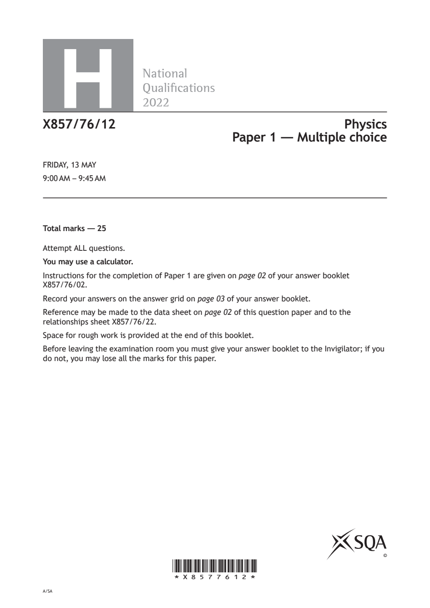
Selectable page text
H
National
Qualications
2022
X857/76/12 Physics
Paper 1 — Multiple choice
FRIDAY, 13 MAY
9:00 AM – 9:45 AM
Total marks — 25
Attempt ALL questions.
You may use a calculator.
Instructions for the completion of Paper 1 are given on page 02 of your answer booklet
X857/76/02.
Record your answers on the answer grid on page 03 of your answer booklet.
Reference may be made to the data sheet on page 02 of this question paper and to the
relationships sheet X857/76/22.
Space for rough work is provided at the end of this booklet.
Before leaving the examination room you must give your answer booklet to the Invigilator; if you
do not, you may lose all the marks for this paper.
©
*X8577612*
A/SAPDF page 2
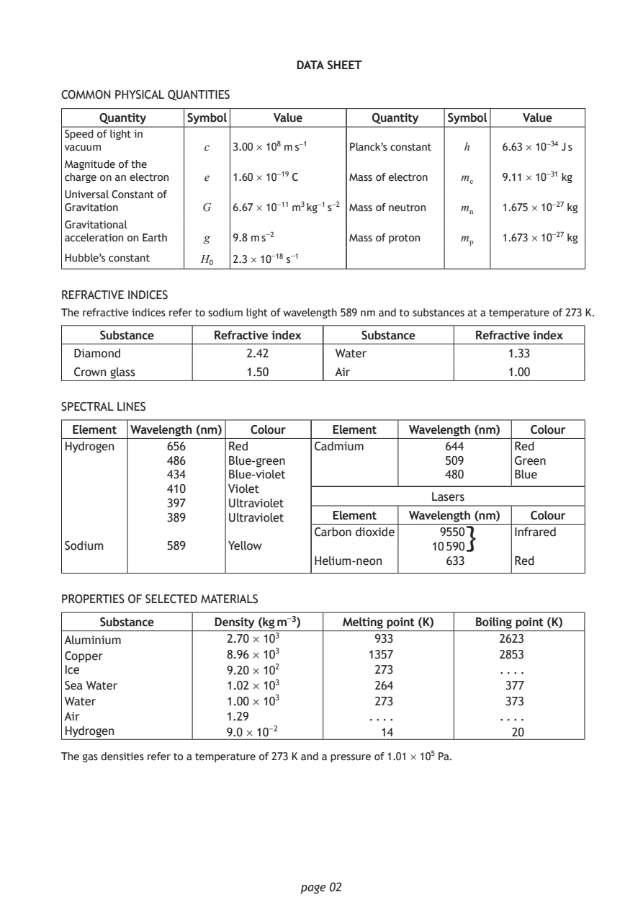
Selectable page text
DATA SHEET
COMMON PHYSICAL QUANTITIES
Quantity Symbol Value Quantity Symbol Value
Speed of light in
vacuum c 3.00 × 10⁸ m s⁻¹ Planck’s constant h 6.63 × 10⁻³⁴ J s
Magnitude of the
charge on an electron e 1.60 × 10⁻¹⁹ C Mass of electron mₑ 9.11 × 10⁻³¹ kg
Universal Constant of
Gravitation G 6.67 × 10⁻¹¹ m³ kg⁻¹ s⁻² Mass of neutron mₙ 1.675 × 10⁻²⁷ kg
Gravitational
acceleration on Earth g 9.8 m s⁻² Mass of proton mₚ 1.673 × 10⁻²⁷ kg
Hubble’s constant H₀ 2.3 × 10⁻¹⁸ s⁻¹
REFRACTIVE INDICES
The refractive indices refer to sodium light of wavelength 589 nm and to substances at a temperature of 273 K.
Substance Refractive index Substance Refractive index
Diamond 2.42 Water 1.33
Crown glass 1.50 Air 1.00
SPECTRAL LINES
Element Wavelength (nm) Colour Element Wavelength (nm) Colour
Hydrogen 656 Red Cadmium 644 Red
486 Blue-green 509 Green
434 Blue-violet 480 Blue
410 Violet
Lasers
397 Ultraviolet
389 Ultraviolet Element Wavelength (nm) Colour
Carbon dioxide 9550} Infrared
Sodium 589 Yellow 10 590
Helium-neon 633 Red
PROPERTIES OF SELECTED MATERIALS
Substance Density (kg m⁻³) Melting point (K) Boiling point (K)
Aluminium 2.70 × 10³ 933 2623
Copper 8.96 × 10³ 1357 2853
Ice 9.20 × 10² 273 . . . .
Sea Water 1.02 × 10³ 264 377
Water 1.00 × 10³ 273 373
Air 1.29 . . . . . . . .
Hydrogen 9.0 × 10⁻² 14 20
The gas densities refer to a temperature of 273 K and a pressure of 1.01 × 10⁵ Pa.
page 02PDF page 3
Paper 1, Question 1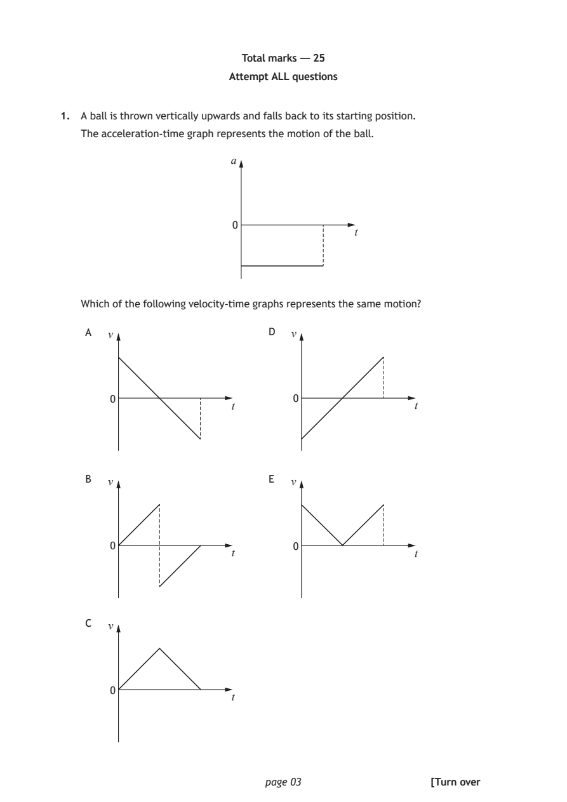
Selectable page text
Total marks — 25
Attempt ALL questions
1. A ball is thrown vertically upwards and falls back to its starting position.
The acceleration-time graph represents the motion of the ball.
a
0
t
Which of the following velocity-time graphs represents the same motion?
A v D v
0 0
t t
B v E v
0 0
t t
C v
0
t
page 03 [Turn overPDF page 4
Paper 1, Question 2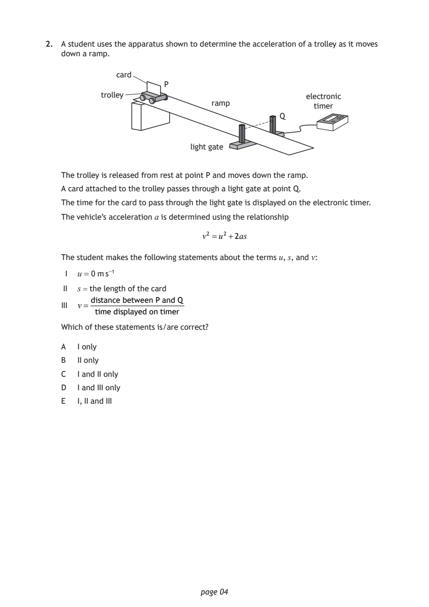
Selectable page text
2. A student uses the apparatus shown to determine the acceleration of a trolley as it moves
down a ramp.
card
P
trolley electronic
ramp
timer
Q
light gate
The trolley is released from rest at point P and moves down the ramp.
A card attached to the trolley passes through a light gate at point Q.
The time for the card to pass through the light gate is displayed on the electronic timer.
The vehicle’s acceleration a is determined using the relationship
v² =u² +2as
The student makes the following statements about the terms u, s, and v:
I u = 0 m s⁻¹
II s = the length of the card
distance between P and Q
III v=
time displayed on timer
Which of these statements is/are correct?
A I only
B II only
C I and II only
D I and III only
E I, II and III
page 04PDF page 5
Paper 1, Question 3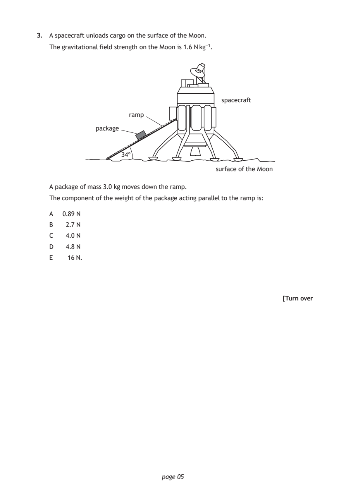
Selectable page text
3. A spacecraft unloads cargo on the surface of the Moon.
The gravitational field strength on the Moon is 1.6 N kg⁻¹.
spacecraft
ramp
package
34°
surface of the Moon
A package of mass 3.0 kg moves down the ramp.
The component of the weight of the package acting parallel to the ramp is:
A 0.89 N
B 2.7 N
C 4.0 N
D 4.8 N
E 16 N.
[Turn over
page 05PDF page 6
Paper 1, Question 4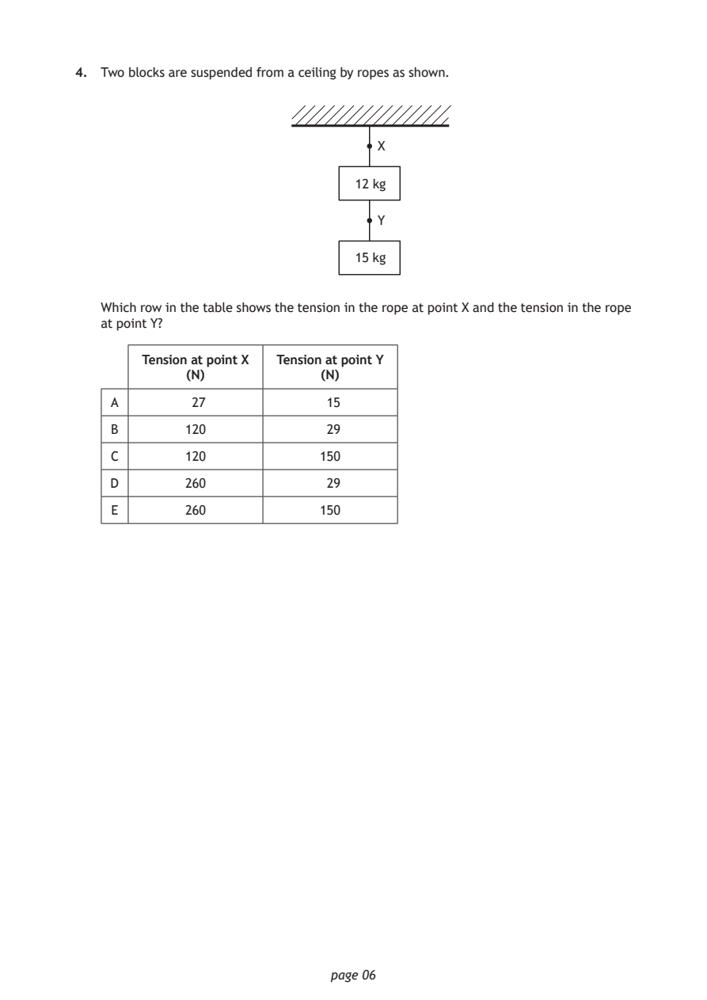
Selectable page text
4. Two blocks are suspended from a ceiling by ropes as shown.
X
12 kg
Y
15 kg
Which row in the table shows the tension in the rope at point X and the tension in the rope
at point Y?
Tension at point X Tension at point Y
(N) (N)
A 27 15
B 120 29
C 120 150
D 260 29
E 260 150
page 06PDF page 7
Paper 1, Question 5Paper 1, Question 6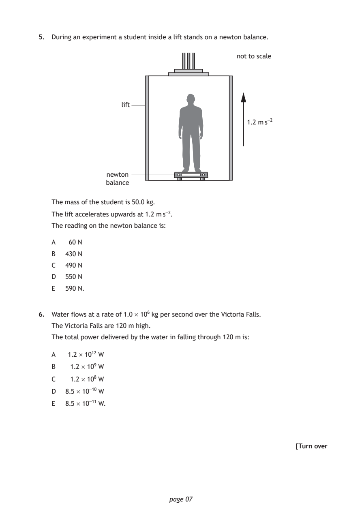
Selectable page text
5. During an experiment a student inside a lift stands on a newton balance.
not to scale
lift
1.2 m s⁻²
newton
balance
The mass of the student is 50.0 kg.
The lift accelerates upwards at 1.2 m s⁻².
The reading on the newton balance is:
A 60 N
B 430 N
C 490 N
D 550 N
E 590 N.
6. Water flows at a rate of 1.0 × 10⁶ kg per second over the Victoria Falls.
The Victoria Falls are 120 m high.
The total power delivered by the water in falling through 120 m is:
A 1.2 × 10¹² W
B 1.2 × 10⁹ W
C 1.2 × 10⁸ W
D 8.5 × 10⁻¹⁰ W
E 8.5 × 10⁻¹¹ W.
[Turn over
page 07PDF page 8
Paper 1, Question 7Paper 1, Question 8Paper 1, Question 9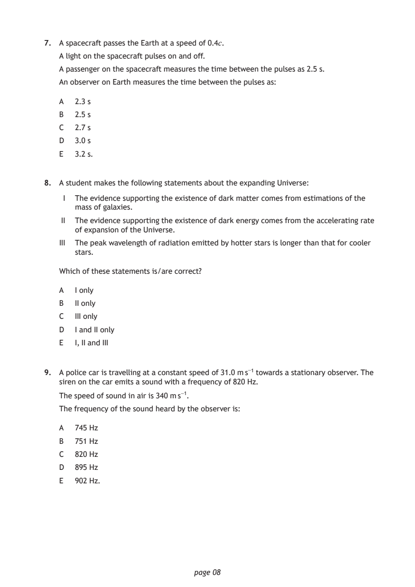
Selectable page text
7. A spacecraft passes the Earth at a speed of 0.4c.
A light on the spacecraft pulses on and off.
A passenger on the spacecraft measures the time between the pulses as 2.5 s.
An observer on Earth measures the time between the pulses as:
A 2.3 s
B 2.5 s
C 2.7 s
D 3.0 s
E 3.2 s.
8. A student makes the following statements about the expanding Universe:
I The evidence supporting the existence of dark matter comes from estimations of the
mass of galaxies.
II The evidence supporting the existence of dark energy comes from the accelerating rate
of expansion of the Universe.
III The peak wavelength of radiation emitted by hotter stars is longer than that for cooler
stars.
Which of these statements is/are correct?
A I only
B II only
C III only
D I and II only
E I, II and III
9. A police car is travelling at a constant speed of 31.0 m s⁻¹ towards a stationary observer. The
siren on the car emits a sound with a frequency of 820 Hz.
The speed of sound in air is 340 m s⁻¹.
The frequency of the sound heard by the observer is:
A 745 Hz
B 751 Hz
C 820 Hz
D 895 Hz
E 902 Hz.
page 08PDF page 9
Paper 1, Question 10Paper 1, Question 11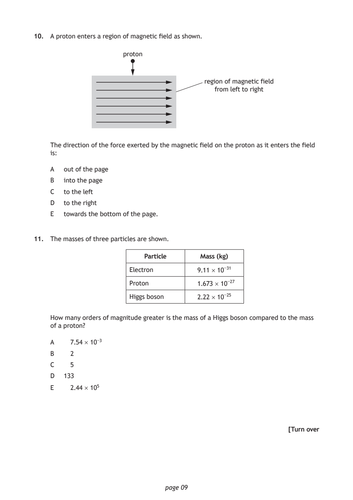
Selectable page text
10. A proton enters a region of magnetic field as shown.
proton
region of magnetic field
from left to right
The direction of the force exerted by the magnetic field on the proton as it enters the field
is:
A out of the page
B into the page
C to the left
D to the right
E towards the bottom of the page.
11. The masses of three particles are shown.
Particle Mass (kg)
Electron 9.11 × 10⁻³¹
Proton 1.673 × 10⁻²⁷
Higgs boson 2.22 × 10⁻²⁵
How many orders of magnitude greater is the mass of a Higgs boson compared to the mass
of a proton?
A 7.54 × 10⁻³
B 2
C 5
D 133
E 2.44 × 10⁵
[Turn over
page 09PDF page 10
Paper 1, Question 12Paper 1, Question 13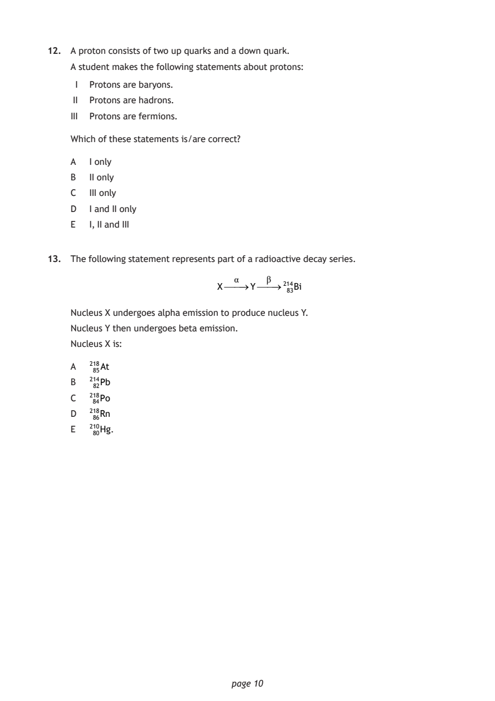
Selectable page text
12. A proton consists of two up quarks and a down quark.
A student makes the following statements about protons:
I Protons are baryons.
II Protons are hadrons.
III Protons are fermions.
Which of these statements is/are correct?
A I only
B II only
C III only
D I and II only
E I, II and III
13. The following statement represents part of a radioactive decay series.
α β ₂
XY 14Bi
83
Nucleus X undergoes alpha emission to produce nucleus Y.
Nucleus Y then undergoes beta emission.
Nucleus X is:
A ²18At
85
B ²14Pb
82
C ²18Po
84
D ²18Rn
86
E ²10Hg.
80
page 10PDF page 11
Paper 1, Question 14Paper 1, Question 15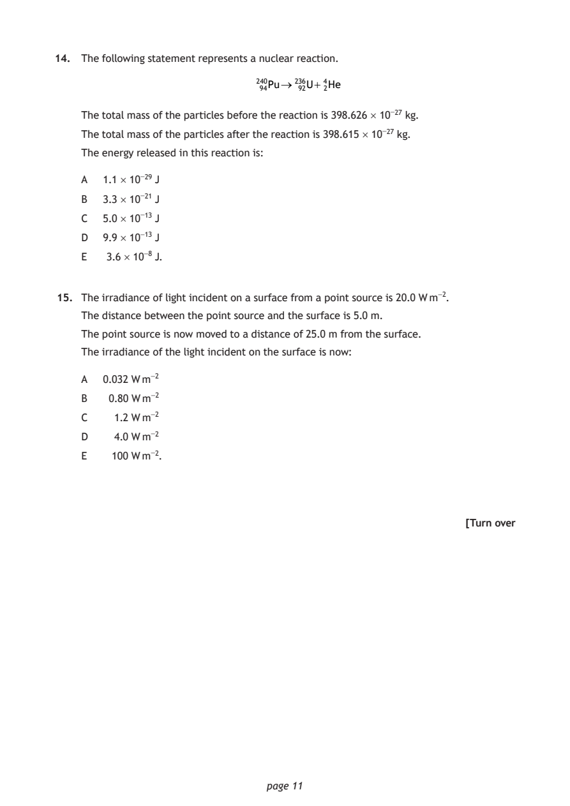
Selectable page text
14. The following statement represents a nuclear reaction.
240Pu²36U+⁴₂He
94 92
The total mass of the particles before the reaction is 398.626 × 10⁻²⁷ kg.
The total mass of the particles after the reaction is 398.615 × 10⁻²⁷ kg.
The energy released in this reaction is:
A 1.1 × 10⁻²⁹ J
B 3.3 × 10⁻²¹ J
C 5.0 × 10⁻¹³ J
D 9.9 × 10⁻¹³ J
E 3.6 × 10⁻⁸ J.
1 5. The irradiance of light incident on a surface from a point source is 20.0 W m⁻².
The distance between the point source and the surface is 5.0 m.
The point source is now moved to a distance of 25.0 m from the surface.
The irradiance of the light incident on the surface is now:
A 0.032 W m⁻²
B 0.80 W m⁻²
C 1.2 W m⁻²
D 4.0 W m⁻²
E 100 W m⁻².
[Turn over
page 11PDF page 12
Paper 1, Question 16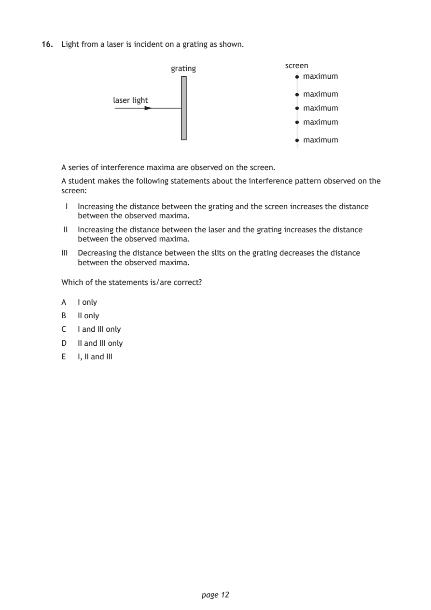
Selectable page text
16. Light from a laser is incident on a grating as shown.
screen
grating
maximum
maximum
laser light
maximum
maximum
maximum
A series of interference maxima are observed on the screen.
A student makes the following statements about the interference pattern observed on the
screen:
I Increasing the distance between the grating and the screen increases the distance
between the observed maxima.
II Increasing the distance between the laser and the grating increases the distance
between the observed maxima.
III Decreasing the distance between the slits on the grating decreases the distance
between the observed maxima.
Which of the statements is/are correct?
A I only
B II only
C I and III only
D II and III only
E I, II and III
page 12PDF page 13
Paper 1, Question 17Paper 1, Question 18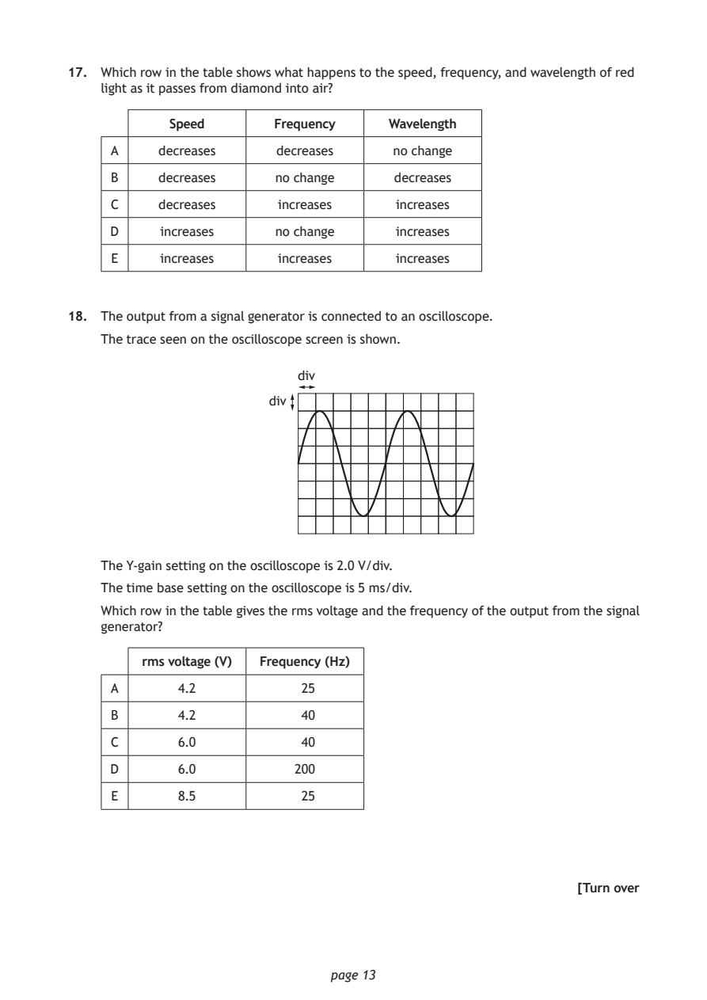
Selectable page text
17. Which row in the table shows what happens to the speed, frequency, and wavelength of red
light as it passes from diamond into air?
Speed Frequency Wavelength
A decreases decreases no change
B decreases no change decreases
C decreases increases increases
D increases no change increases
E increases increases increases
18. The output from a signal generator is connected to an oscilloscope.
The trace seen on the oscilloscope screen is shown.
div
div
The Y-gain setting on the oscilloscope is 2.0 V/div.
The time base setting on the oscilloscope is 5 ms/div.
Which row in the table gives the rms voltage and the frequency of the output from the signal
generator?
rms voltage (V) Frequency (Hz)
A 4.2 25
B 4.2 40
C 6.0 40
D 6.0 200
E 8.5 25
[Turn over
page 13PDF page 14
Paper 1, Question 19Paper 1, Question 20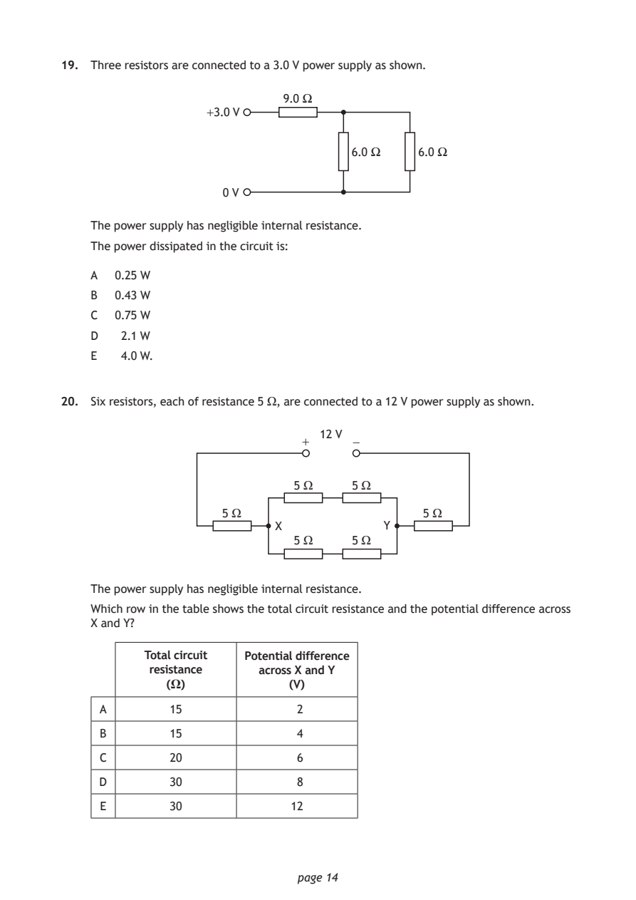
Selectable page text
19. Three resistors are connected to a 3.0 V power supply as shown.
9.0 Ω
+3.0 V
6.0 Ω 6.0 Ω
0 V
The power supply has negligible internal resistance.
The power dissipated in the circuit is:
A 0.25 W
B 0.43 W
C 0.75 W
D 2.1 W
E 4.0 W.
20. Six resistors, each of resistance 5 Ω, are connected to a 12 V power supply as shown.
12 V
+ −
5 Ω 5 Ω
5 Ω 5 Ω
X Y
5 Ω 5 Ω
The power supply has negligible internal resistance.
Which row in the table shows the total circuit resistance and the potential difference across
X and Y?
Total circuit Potential difference
resistance across X and Y
(Ω) (V)
A 15 2
B 15 4
C 20 6
D 30 8
E 30 12
page 14PDF page 15
Paper 1, Question 21Paper 1, Question 22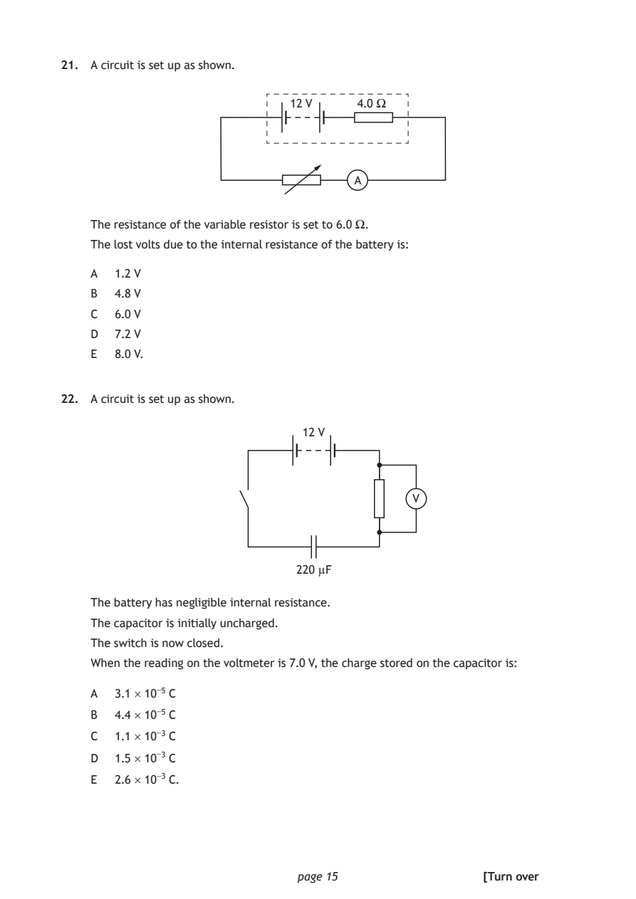
Selectable page text
21. A circuit is set up as shown.
12 V 4.0 Ω
A
The resistance of the variable resistor is set to 6.0 Ω.
The lost volts due to the internal resistance of the battery is:
A 1.2 V
B 4.8 V
C 6.0 V
D 7.2 V
E 8.0 V.
22. A circuit is set up as shown.
12 V
V
220 µF
The battery has negligible internal resistance.
The capacitor is initially uncharged.
The switch is now closed.
When the reading on the voltmeter is 7.0 V, the charge stored on the capacitor is:
A 3.1 × 10⁻⁵ C
B 4.4 × 10⁻⁵ C
C 1.1 × 10⁻³ C
D 1.5 × 10⁻³ C
E 2.6 × 10⁻³ C.
page 15 [Turn overPDF page 16
Paper 1, Question 23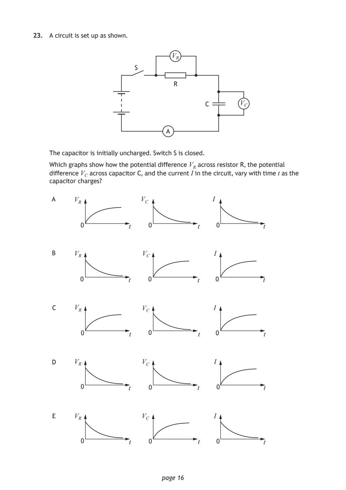
Selectable page text
23. A circuit is set up as shown.
V_{R}
S
R
C V_{C}
A
The capacitor is initially uncharged. Switch S is closed.
Which graphs show how the potential difference V_{R} across resistor R, the potential
difference V_{C} across capacitor C, and the current I in the circuit, vary with time t as the
capacitor charges?
A V_{R} V_{C} I
0 t 0 t 0 t
B V_{R} V_{C} I
0 t 0 t 0 t
C V_{R} V_{C} I
0 t 0 t 0 t
D V_{R} V_{C} I
0 t 0 t 0 t
E V_{R} V_{C} I
0 t 0 t 0 t
page 16PDF page 17
Paper 1, Question 24Paper 1, Question 25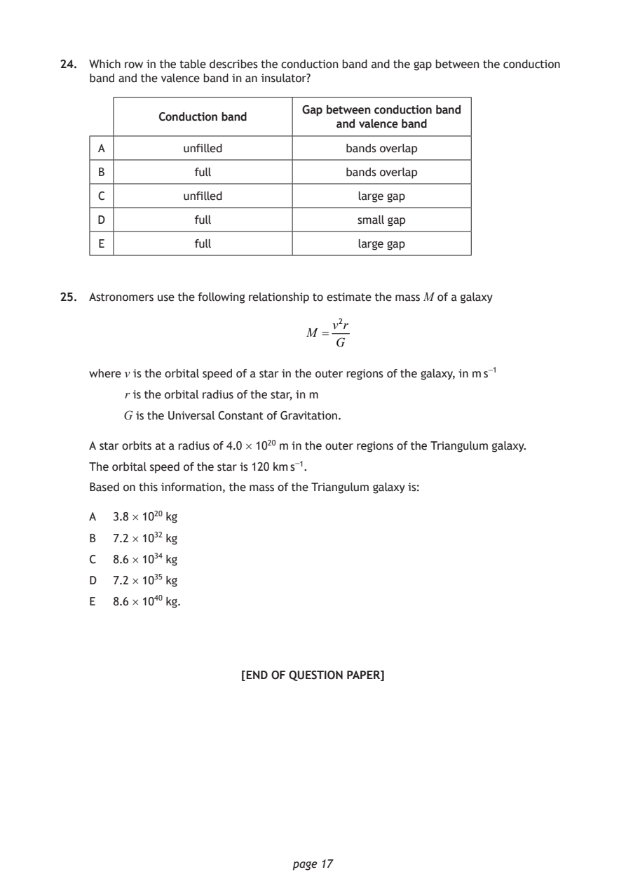
Selectable page text
24. Which row in the table describes the conduction band and the gap between the conduction
band and the valence band in an insulator?
Gap between conduction band
Conduction band
and valence band
A unfilled bands overlap
B full bands overlap
C unfilled large gap
D full small gap
E full large gap
25. Astronomers use the following relationship to estimate the mass M of a galaxy
v²r
M =
G
where v is the orbital speed of a star in the outer regions of the galaxy, in m s⁻¹
r is the orbital radius of the star, in m
G is the Universal Constant of Gravitation.
A star orbits at a radius of 4.0 × 10²⁰ m in the outer regions of the Triangulum galaxy.
The orbital speed of the star is 120 km s⁻¹.
Based on this information, the mass of the Triangulum galaxy is:
A 3.8 × 10²⁰ kg
B 7.2 × 10³² kg
C 8.6 × 10³⁴ kg
D 7.2 × 10³⁵ kg
E 8.6 × 10⁴⁰ kg.
[END OF QUESTION PAPER]
page 17PDF page 18

Selectable page text
SPACE FOR ROUGH WORK
page 18PDF page 19
Selectable page text
SPACE FOR ROUGH WORK
page 19PDF page 20

Selectable page text
[BLANK PAGE]
DO NOT WRITE ON THIS PAGE
page 20